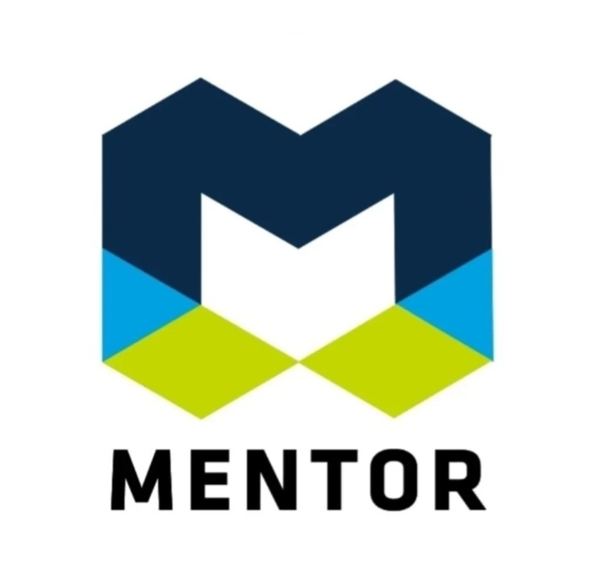
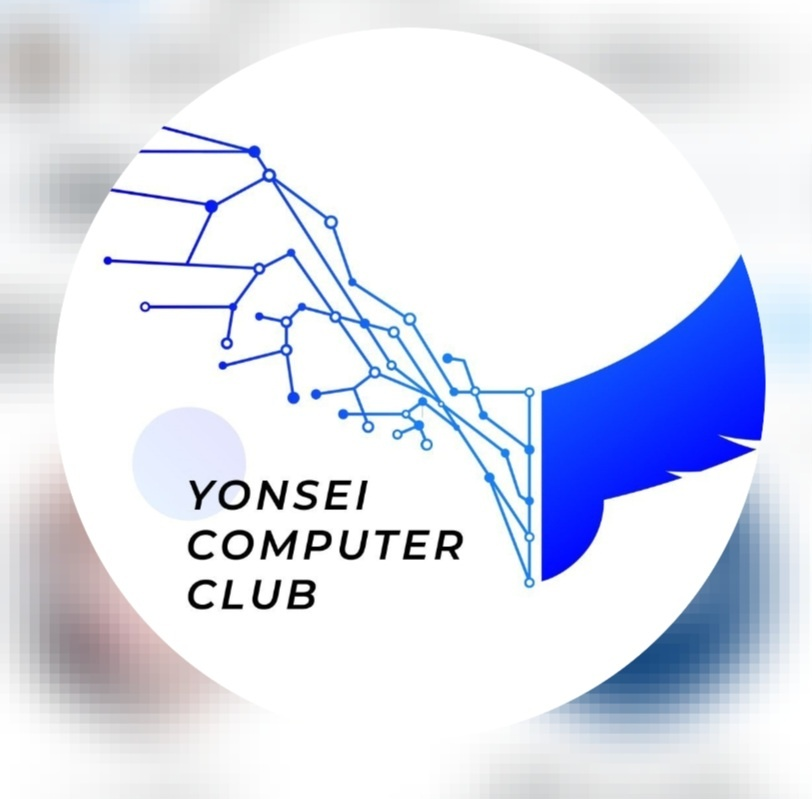
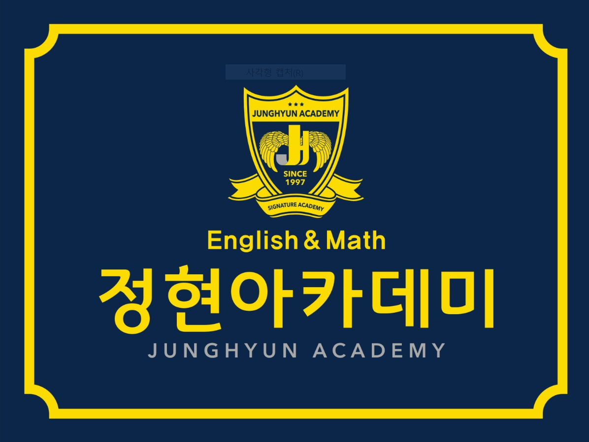

|
Beuro Kim EducationI'm an undergraduate in Yonsei University in Korea, and I'm majoring in Artificial intelligence. (GPA: 3.92/4.30) Research InterestsI'm interested in deep learning and reinforcement learning for robotics. |
Honors & AwardsNational scholarshipScholarship from Korea Scholarship Foundation Apr.2023 ‑ Present Full‑ride scholarship KC Future Scholarship Scholarship from KC Future Foundation Mar.2024 ‑ Present Full tuition, living expenses support for undergraduate studies Honors 1st & 2nd semester, 2023 award criteria Experiences & Projects |
|  |
Yonsei‑Nexon √i RC Creative Platform
application developer Mar.2023 ‑ Jul.2023 With my team members, conceived an application that provides examples of the correct usage to people who have difficulty using ChatGPT. |
|  |
Yonsei Computer Club(YCC)
member Mar.2024 ‑ Present
Participated in a back‑end development study group with Python.
|
|
Sunrin SW Gifted Education Center
student Mar.2018 ‑ Dec.2019 project code / competition poster Learned basic programming languages such as Python and Arduino. (Project) Developed a water bottle that allows to take pills at a fixed time. If a user sets the time to take pills with a smartphone, the time is transmitted to the water bottle via Bluetooth, and when the time is set, the pills stored on the lid falls down and can be taken immediately. Received an award at the SW Gifted Education Output Competition. |
|
|
Embedded Software and Mobile Application Implementation
developer Jul.2022 - Aug.2022 project code
(Project)
Developed a mobile application and a treatment equipment that help patients rehabilitate with the contents of physical therapy.
|
|

|
ReconFusion: 3D Reconstruction with Diffusion Priors
Rundi Wu*, Ben Mildenhall*, Philipp Henzler, Keunhong Park, Ruiqi Gao, Daniel Watson, Pratul P. Srinivasan, Dor Verbin, Jonathan T. Barron, Ben Poole, Aleksander Holynski* CVPR, 2024 project page / arXiv Using a multi-image diffusion model as a regularizer lets you recover high-quality radiance fields from just a handful of images. |
Extracurricular Activities |
|  |
General Academy
Math and English instructor Dec.2022 ‑ Present Adopted the right teaching method for each student and taught them all in different ways. |
|
AI Band Club(ABC)
member Mar.2023 ‑ Present
Playing the bass and keyboard.
|
|
|
Student Council
committee Mar.2024 ‑ Present Planned and managed major events within the department, including freshman orientation. |
|
Website template from Jon Barron. |